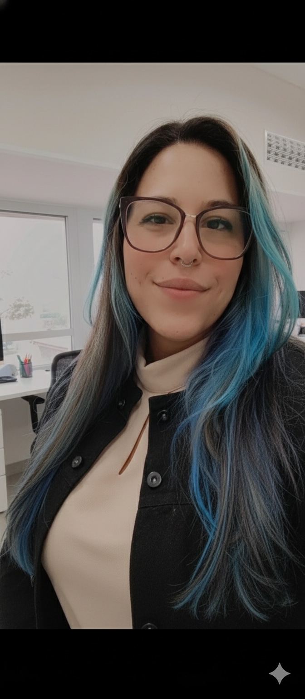
Olá, eu sou Ligia Ribeiro
Diretora de Arte & Desenvolvedora de Software Multiplataforma
Como Diretora de Arte na CREATIVOSBR e estudante de Desenvolvimento de Software Multiplataforma na FATEC Jacareí, eu uno um olhar apurado para design, usabilidade e identidades visuais marcantes com a lógica do desenvolvimento. Crio soluções tecnológicas completas, navegando com fluidez desde a prototipação de interfaces no Figma até a construção de código no front-end e back-end.
Projetos em Destaque
Azimuth
🏆 Vencedor do Prêmio Fatec de Melhor Projeto de Tecnologia do Ano
Sistema envolvendo app mobile e IoT com Arduino. Atuei na pesquisa de produtos oceanográficos, arquitetura do software, prototipação no Figma, criação do front-end, manutenção do banco de dados e construção da parte de IoT.
Ver Fotos do Projeto
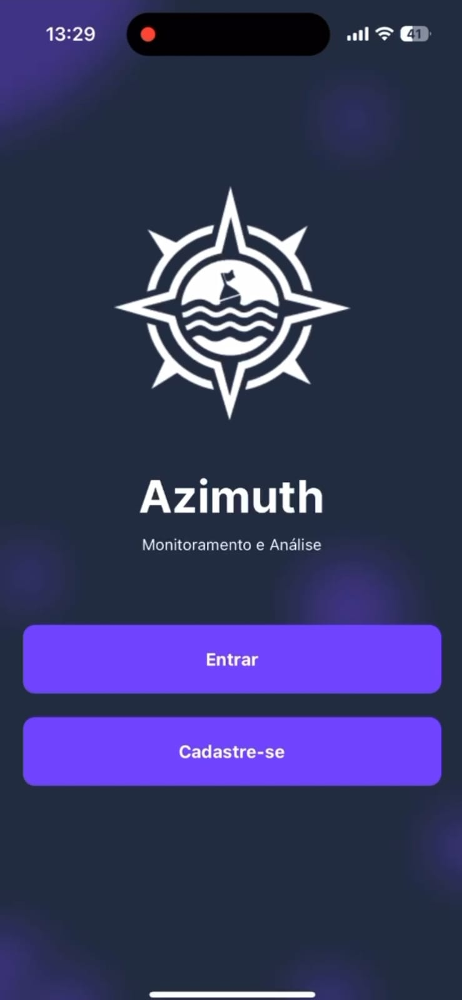


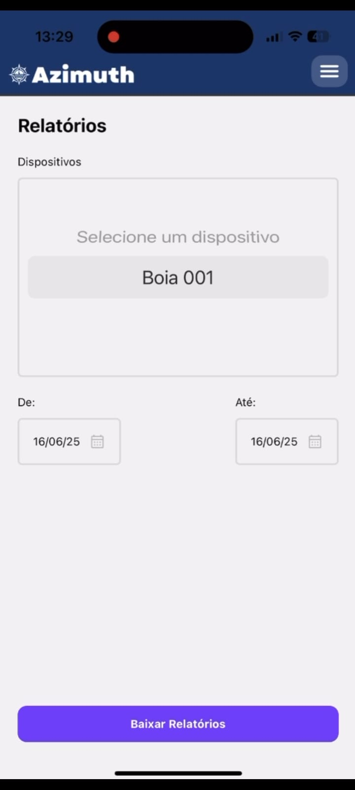
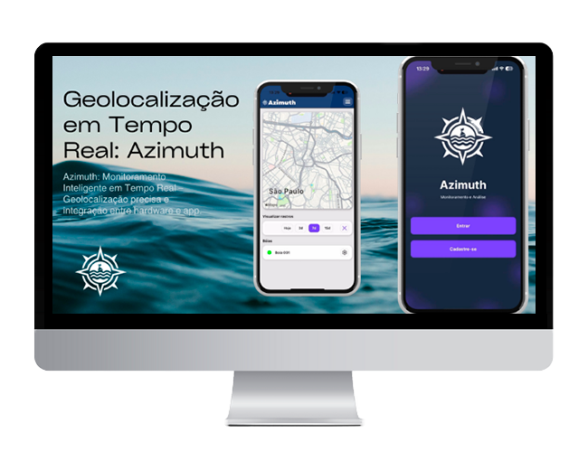
Receita.AI
Aplicação integrando inteligência artificial. Fui responsável pela criação da identidade visual, construção do design system do projeto, melhorias de usabilidade e atuação no desenvolvimento do front-end.
Ver Fotos do Projeto


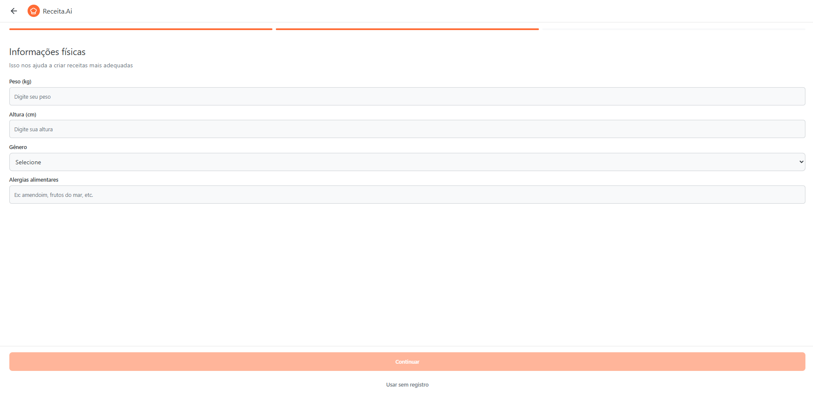
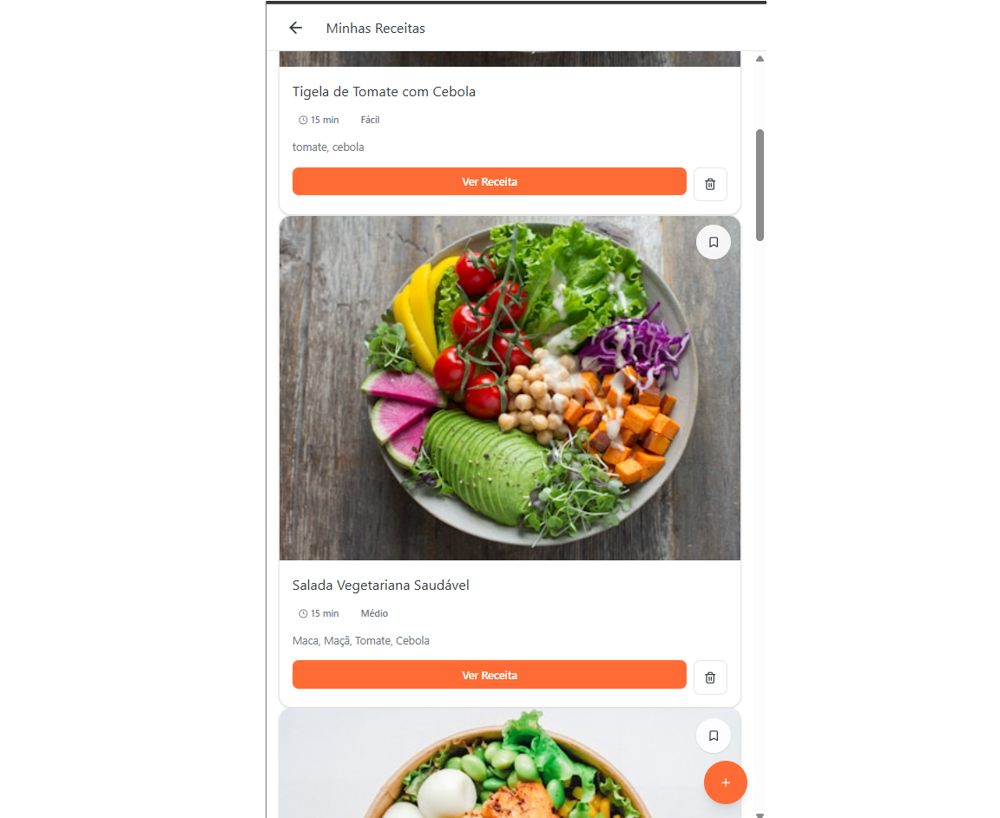


Site Scrum
Plataforma interativa para ensino da metodologia ágil. Participei ativamente na criação da identidade visual, prototipação completa no Figma e desenvolvimento do front-end.
Ver Fotos do Projeto
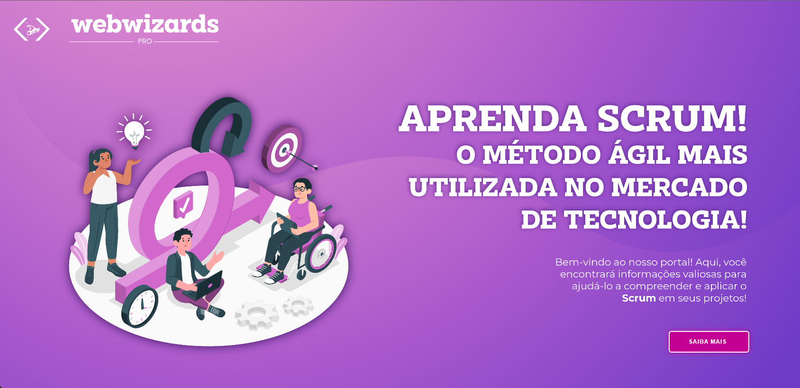
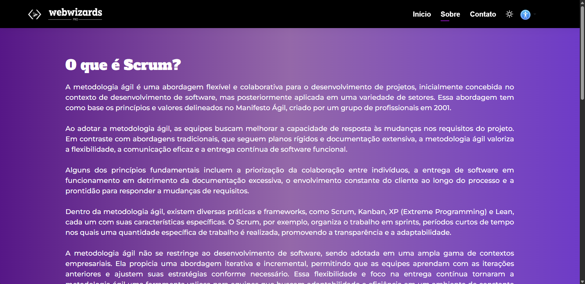
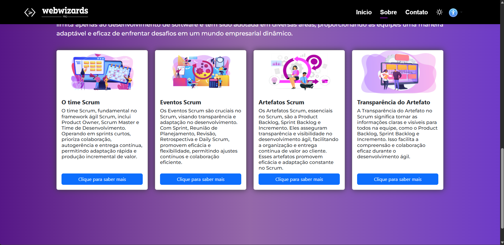
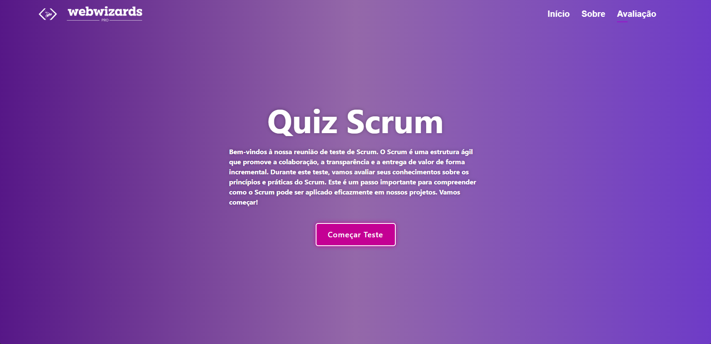
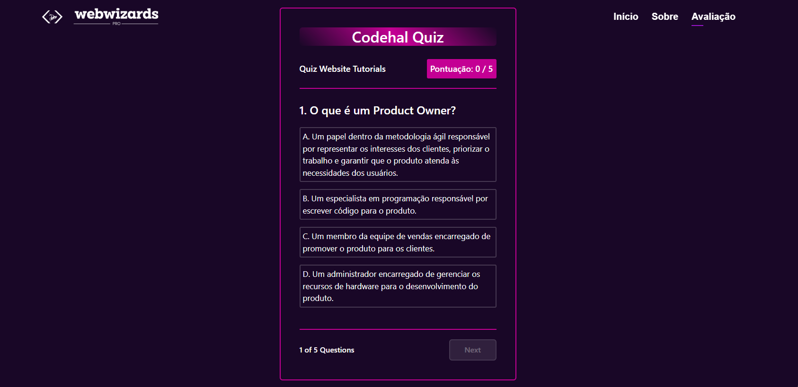
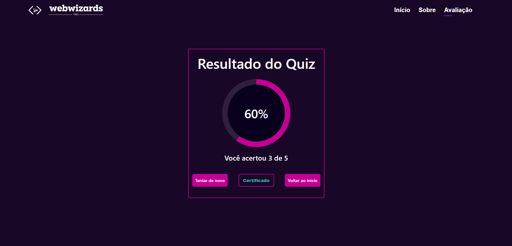
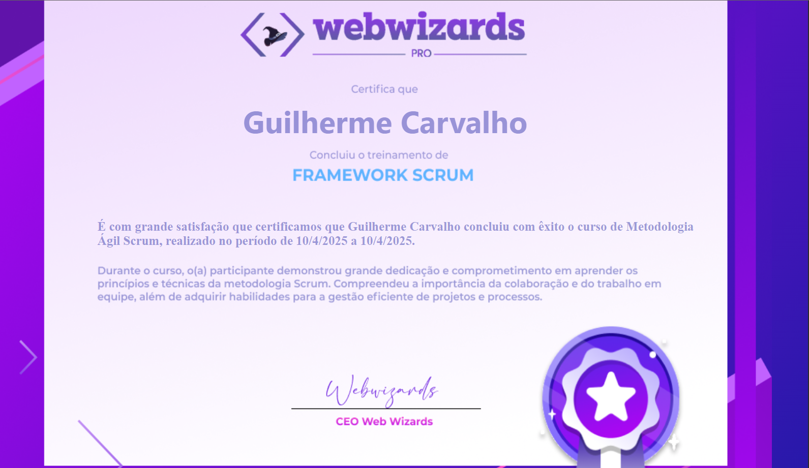
Visiona
Desenvolvimento de sistema e interface. Minhas atribuições incluíram a criação da identidade visual, estabelecimento de um design system consistente, otimização de usabilidade e programação front-end.
Ver Fotos do Projeto

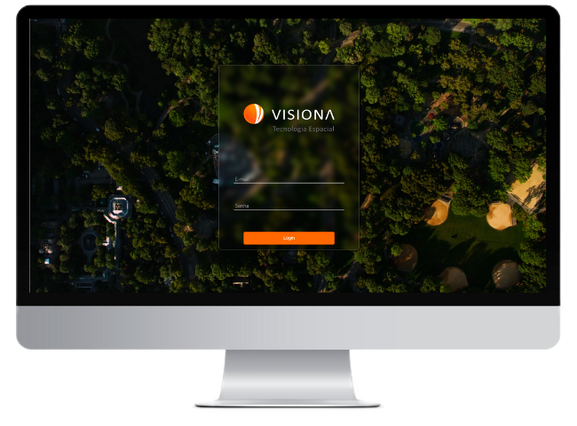

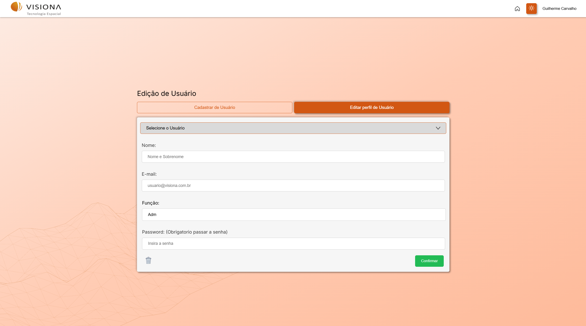

Pequenos Sabores (ABP)
Aplicação voltada para o controle de calorias e auxílio nutricional de crianças e adolescentes até 17 anos. Participei da pesquisa de público-alvo, criação da identidade visual, idealização da interface e construção do back-end e front-end.
Ver Repositório